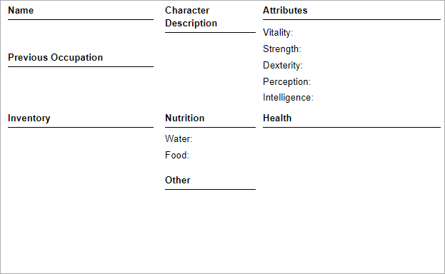

Character
Character Sheet
Here is a picture of the base character sheet used:

In a player's case, they would copy this and edit the individual fields accordingly.
Or your DM could provide something like a
google form if you are lazy.
Let's explain some of these fields.
Name - Your character's name, can be anything but make sure to listen to your
DM about naming conventions before you fill this out. (I don't have any.)
Previous Occupation - Your character's job before their boss
was horribly mutilated by a zombie. You should base your attributes and
starting inventory around this.
Inventory - What your character starts with, this is both chosen by
you, and the commonly by the detriment you got.
Character Description - Your general description of how your
character looks, good for other players, roleplay, and etc.
Nutrition - Leave this blank as you are filling out your stuff.
It'll come in play once you begin your first session.
Other - A place to enter other miscellaneaous
things like known languages, and etc. Not required.
Attributes - Your stats, how well you perform on specific tasks,
etc.
Health - This is where you write your in-game injuries, conditions, and
detriments.
Attributes
Your attributes dictate how well you perform certain actions and conditions. Here are the basic attributes. (The
DM can branch off
attributes into skills, but I won't be doing that for simplicity.)
Vitality  -
Similar to the Dungeon & Dragon's Constitution attribute, this dictates how
healthy you are, how well you can hold against poisons, diseases, etc. For every point above 0, 5 extra max health is
added, and vice versa for every point below 0.
-
Similar to the Dungeon & Dragon's Constitution attribute, this dictates how
healthy you are, how well you can hold against poisons, diseases, etc. For every point above 0, 5 extra max health is
added, and vice versa for every point below 0.
Strength -
This is involved in actions like lifting heavy objects, holding doors closed, melee combat (with blunt objects),
and more. This also adds 10 lbs. to your carrying capacity for each point above 0,
but only removes 5 lbs. for each point below 0.
Dexterity -
This is very similar to the Dungeons & Dragon's Dexterity attribute, this is involved
in many things including melee combat (with non-blunt objects), dodging attacks, how fast you run, etc.
Perception -
How well you use your senses to indentify your surroundings.
THIS IS NOT A LUCK STAT FOR SEARCHING FOR ITEMS.
Intelligence -
Use ya brain. Other stuff like memory, history/context, and etc. tie into this too. The DM may also
allow players to roll a Intelligence check to potentionally get a hint or pointer to something.
Players are given 12 attribute points which they may divide across the attributes anyway they please (though each attribute
has a max of 4 points allowed to be alloted to it.) If players wish to get better stats they can gamble their way
by purchasing an attribute point gamble in the character shop. (Though, this has the possibility to backfire around
minus 1 point from the selected attribute, and you can't go back after a failure.)
After everything is selected, you add the amount of points in the attribute
relating to the check to the resulting dice roll on attribute checks. (This is called your attribute modifier.)
Inventory
Inventory is based around weight (in lbs.), every character starts out with a carrying capacity of 15 lbs. (without any sort of bag, box)
Base carrying capacity can be increased or decreased with your strength attribute. The use of bags, boxes, backpacks, or any container
can increase your carrying capacity.
Along with that, you start with a starting inventory based on your
detriments and what you chose in the character shop.
You can find all the base game items
here.
Detriments
Detriments are permanent injuries, diseases, conditions, etc. This system is not required but brings an extra spice to gameplay.
(I will be using this.) A spinner is spun or a die (with a really specific number of sides) is rolled, deciding what This
detriment is.
Detriments range from bad to extremely bad. For example, asthma to blindness (the worse detriment, the rarer it is).
Of course, you'll be given extra starting items relating to whatever detriment you got as compensation.
List of Detriments
| Name |
Chance
(out of d100) |
Description |
Compensation |
| Blindness |
1 |
You cannot see, and are reliant on touch and hearing. This means you instantly fail perception checks involving
sight. |
You begin with a
walking stick and
cool ass sunglasses. |
| Deafness |
2 |
You cannot hear, meaning you instant fail perception checks involving hearing. |
You fully understand sign language, and can make a perception check with a static -2 modifier
to read lips if looking at someone. |
| Nothing |
91-100 |
Hurrah! You somehow got no debuff to your character. |
N/A |
Character Shop